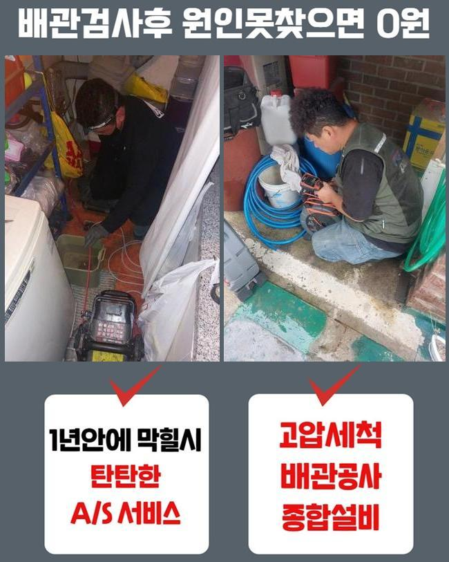
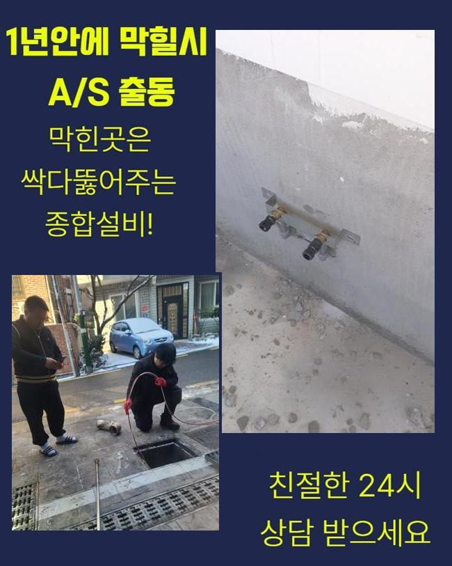
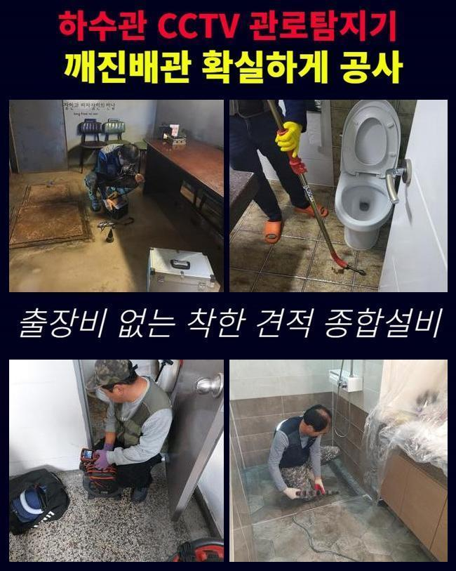
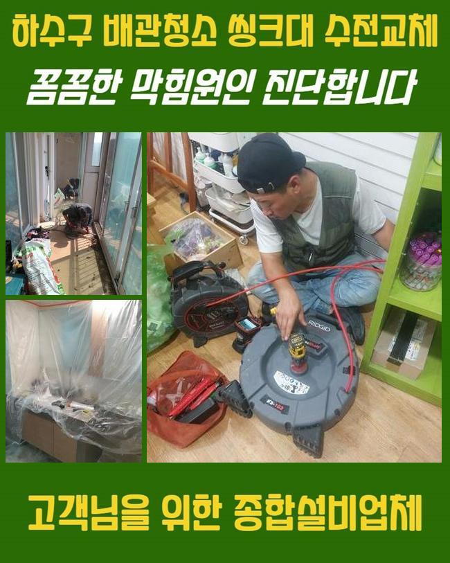
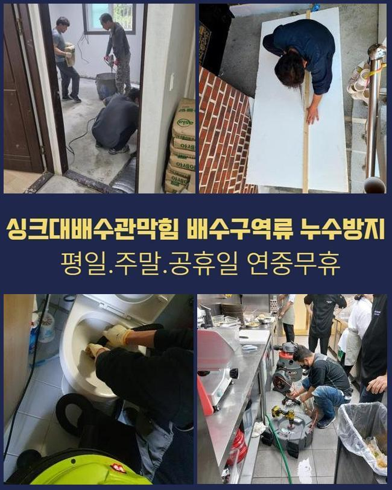
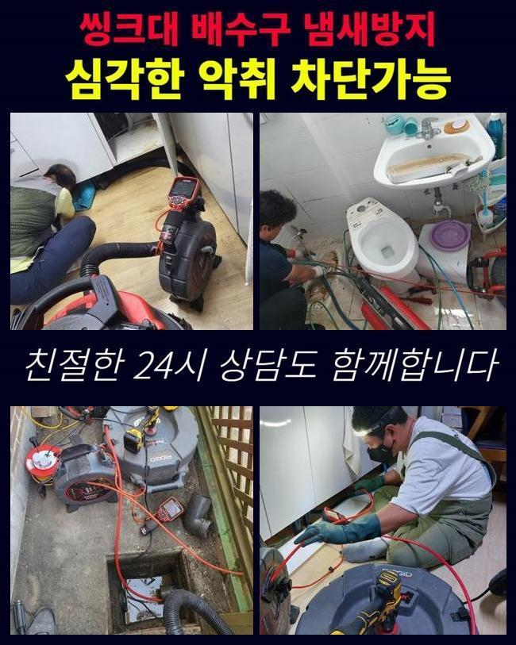

🏠 군산 하수구막힘 싱크대호수교체 하수관CCTV 화장실양변기교체
용인 싱크대막힘 전문 시공 후기

📋 작업 개요
- 위치: 용인
- 서비스 유형: 싱크대막힘, 변기막힘, 하수구막힘, 배관막힘, 맨홀막힘, 집수정막힘, 누수수리, 뚫는업체, 배관청소, 고압세척, 배관보수
- 작업 일시: 2024. 11. 20. 10:58
- 업체명: 하수구수사대 (010-5615-2118)
🔍 문제 상황
군산 하수구막힘 싱크대호수교체 하수관CCTV 화장실양변기교체
최근의 현장은 우수 배수관 막힘현상이 생겨 옥상 정원으로 물이 넘쳐 흐르는 문제가 나타났던 현장인데요
이 장소 이외 다양한 곳에서 상담을 주셨고 해결했었지만 이번 문제장소는 수 많은 고객들이 내방하는 도서관이며 최고 난이도의 장소이었기에 게시글을 작성 하고 있습니다
흔히 빗물 하수관이 기능을 못할 땐 낡은 시설물에서 보수가 부족하여 하수관에 여러가지 이물들이 침투된 상황이 대부분입니다
반면에 금번 의뢰장소는 건축된 지 오래된 편이 아니며 유지 작업도 철저하게 지켜오던 장소입니다
4층 공간이 조경된 상태로 조성되어 있었고 옥상부분은 대부분 대리석 재질로 작업을 해놨어요
그러므로 석회성분들이 우수 배수관에 가라앉아 파이프가 막히게 되며 여러 측면에서 불편사항이 생긴 장소였습니다
설비 책임자 근로자와 같이 빗물 배관이 어느 경로로 이어져서 최종 배출되는 방향 확인을 한 뒤에 시공을 실시하기로 했습니다

🔎 원인 분석
💡 전문가 진단: 정밀 진단 장비를 사용하여 슬러지의 고착 여부를 판명하고 타격/세척 작업을 실시했습니다.
옥상시설의 우수배출관 막힘 상태로 말미암아 도서관 입구로 물이 새는 물샘 현상까지 발생함에 따라 도서관을 내방하는 사람들의 불만이 커지기 때문에 단시간에 작업이 완료되길 바라셨어요
설비 운영 직원들은 밤낮 없이 비가 쏟아지면 옥상에서 배수 펌프 또한 가동하며 응급조치로 문제가 생기지 않게 노력하고 계셨어요
스태프들의 노고를 줄이기 위해서 온 힘을 다해 상태를 수습해드리도록 최선을 다하였습니다
최근의 현장은 사흘간 공정을 진행했으며 우수 배출관은 10개 전부를 세척했습니다
시작일엔 비가 많이 떨어지던 때에 과정을 처리했으며 내시경카메라기기 점검과 고압물세척을 통해서 절차를 실시했습니다
석회성물질들이 누적되며 나타나는 우수 배수관 막힘은 흔한 일이지만 이 정도로 많은 양의 석회 고형물은 처음 맞닥뜨렸습니다
옥상시설이 전부 대리석을 사용해서 이 같은 곳은 계획적인 점검으로 막힘 방지를 하는 것을 권장합니다
전형적인 우수 배출관과 구조가 달라 수리과정의 난도는 극한의 상태였고 고압 클리닝과 플렉스샤프트 기기를 사용해 다각적인 작업을 실시했습니다

🔧 작업 과정
옥상 층에서 절차를 실시해도 형세가 바뀌지 않아 작업 구역을 옮긴 다음 같이 작업을 진행하였습니다
입상 배관이 있는 첫번째 층 피트룸에서 상하로 병행해서 시공을 실행했습니다
상부에서 뻗어나온 곳 그리고 교차하는 지점에서 석회성물질 및 다양한 침전물들이 퇴적되어 시간이 굉장히 소모되는 공정이었습니다
지붕에서 내려온 후 중간 단계에서 두번 정도 구부러진 배관으로 연결되어 있는 지점을 지나 배관실 안에 입상배관으로 내려오는 구조인데 이 구역이 현재는 완전히 막혀있는 상황으로 진단된 상황이며
빠른 속도로 시공을 실시하려면 살짝 절단을 한 뒤 안전 처리를 하고 절차를 진행하면 단시간에 처리할 수 있지만
문제 지점이 도서관 고객들이 책 읽는 공간의 천장 윗쪽에 있어서 불편을 최대한 줄이기 위해 오래 걸리고 어려움이 있더라도 도서관 이용객에게는 불편을 주는 것을 피하려고 애썼습니다
배관전용 카메라를 통하여 상부 빗물 빗물 배관이 뚫린 후 이후 지점으로 옳겨진 석회입자들이 가득했어요
지금부터는 석회 덩어리들을 밖으로 전부 내보내야 공정이 완전하게 완수됩니다
옥상 부분부터 바깥의 빗물 집수정까지 관로의 길이는 60미터를 초과하는 경로여서 여러차례 위치를 변경해나가며 고압청소 또한 두 대의 기기를 활용해 동시에 절차를 진행하였습니다
건너편 옥상 빗물 배출관 시공은 막힘 상태가 크지 않아서 더 심각한 문제를 예방하려는 배수관 세척이었기에 플렉스샤프트 기기를 통해 석회를 긁어내고 흡입장치를 사용해 청소를 실행했습니다
옥상 전체의 빗물관 공정 절차가 70 퍼센트 정도 된 후 우수맨홀에서 반대방향으로 석회 결정체들을 제거하는 과정을 실행합니다
집수정 구역으로 작업지를 바꾸어 고압세정을 통하여 석회 고형물들을 끌어당기는 시공으로 완료할 예정이에요
최근의 현장은 시공 진행 기간이 사흘에 걸쳐 지속될 정도로 큰 규모의 어려움이 많았던 작업장이었어요


✅ 작업 완료
설비 운영 직원들의 협력과 기후조건이 변화되지 않았다면 성공적으로 완수하기 힘들었을 수도 있는 작업장이었는데요
감사하게도 조금씩 우천 상태가 좋아진데다가 직접 나서서 도움을 주신 근로자들 덕택에 상황들은 빠르게 처리할 수 있게 되었습니다
많은 빗물이 내리면 반복해서 나타나 의뢰가 들어오는 빗물관 막힘 사례는 사전에 준비하여 막힘이 일어나지 않게 규칙적인 관심과 주의를 가졌으면 좋겠습니다
비가 내리기 전에 심각한 피해를 입지 않게 베테랑기사에게 반드시 상담하시고 검사를 받아보세요



⚠️ 베란다 누수 및 방수 관리 방법
- ✅ 비가 많이 올 때 창틀 주변이나 아래층 천장에 얼룩이 생기는지 정기적으로 확인해 보세요.
- ✅ 우수관 주변 실리콘 마감이 들뜨거나 깨진 틈새가 있는지 손상 여부를 수시로 체크하세요.
- ✅ 베란다 바닥 타일의 줄눈(메지)이 소실되면 그 틈으로 물이 침투하여 누수가 유발됩니다.
- ✅ 누수 의심 증상 발견 시 방치하면 아래층 손실이 커지므로 즉시 전문가의 진단을 받으십시오.
💡 핵심 정리
- 확실한 장비 작업(내시경 점검 및 샤프트 스케일링)으로 원인을 뿌리 뽑습니다.
- 작업 후 1년 이내에 동일한 부위 재발 시 100% 무상 A/S 서비스를 보장합니다.
- 서울 · 경기 · 인천 전 지역에 24시간 언제든 긴급 출동할 수 있도록 항시 대기 중입니다.
❓ 자주 묻는 질문 (FAQ)
🚨 용인 싱크대막힘 문제로 고민이신가요?
정확한 원인 진단과 확실한 시공으로 재발 없는 해결을 약속드립니다.
24시간 긴급 출동 | 서울 · 경기 · 인천 전지역 | 1년 내 재발 시 무상 A/S